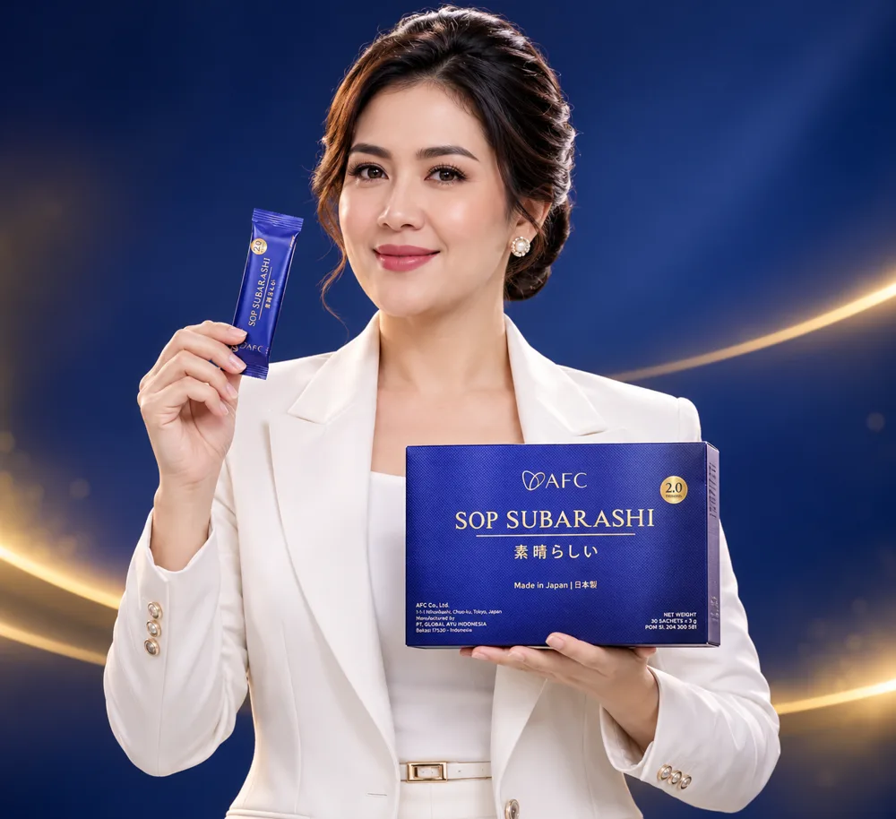
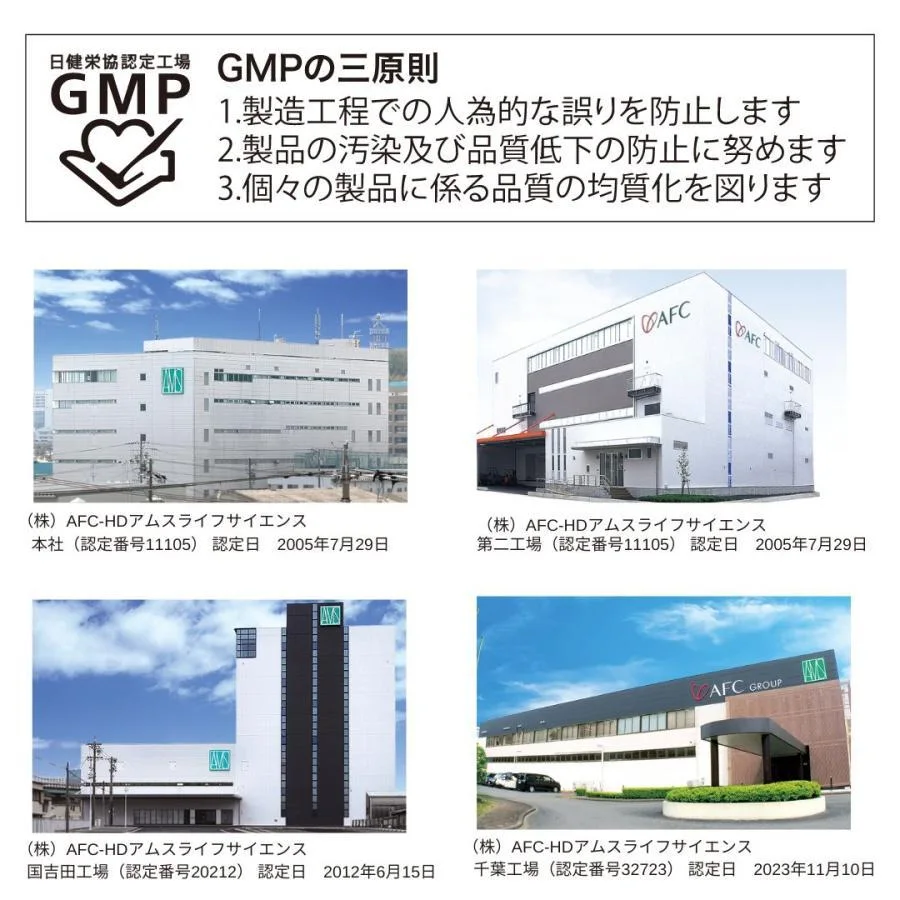
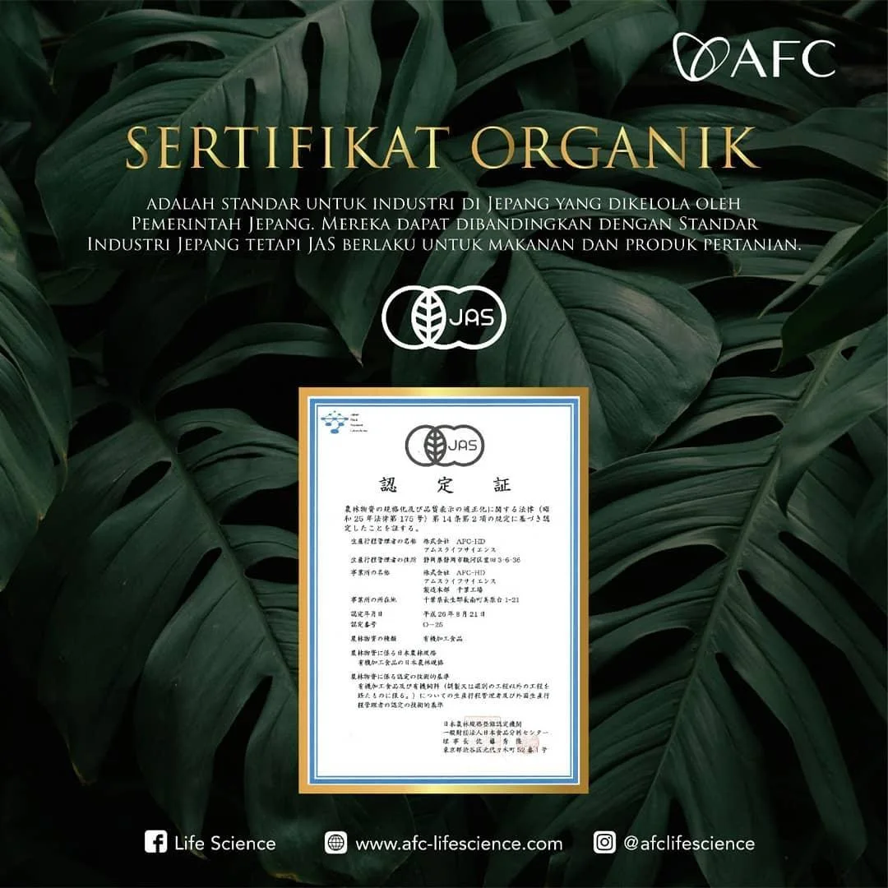
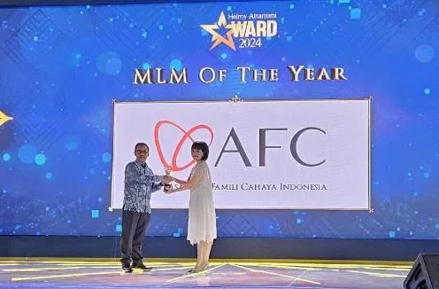
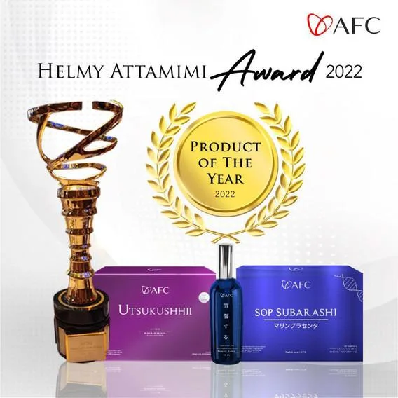
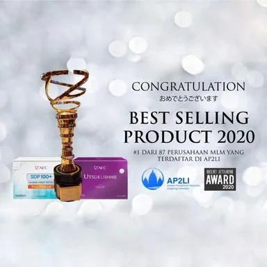
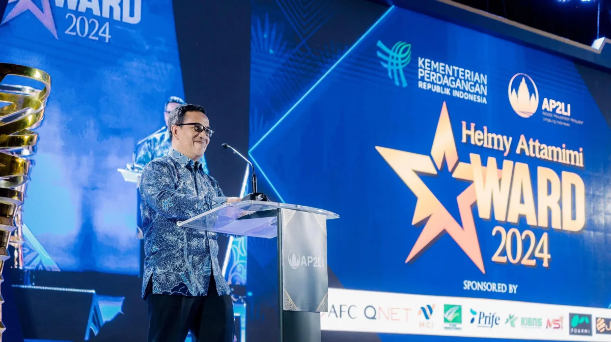

Kualitas Nutrisi Jepang untuk Mendukung Hidup Lebih Baik
Informasi produk, harga, komposisi, dan legalitas AFC Life Science tersaji transparan, sehingga Anda dapat memilih dengan tenang dari jalur penjualan yang bisa dipertanggungjawabkan.

Mengenal AFC Life Science
AFC merupakan singkatan dari Asayama Family Club. Menurut website perusahaan, AFC didirikan oleh Asayama Tadahiko dan mulai berekspansi ke pasar internasional sejak 1999.
Dengan pengalaman lebih dari lima dekade, AFC terus menghadirkan berbagai produk nutrisi dengan perhatian pada kualitas dan proses produksi. Informasi di bagian ini bersumber dari website resmi AFC.
| Perusahaan | AFC-HD AMS Life Science Co., Ltd. |
| Lokasi | Shizuoka, Jepang |
| Tahun berdiri | 1969 |
| Ekspansi internasional | 1999 |
| Bursa saham | Tokyo Stock Exchange (kode 2927) |
| Pengalaman produksi | Lebih dari 50 tahun |
| Portofolio | Lebih dari 40.000 produk terdaftar di Jepang |
Memahami Paten pada Materi Produk
Nomor dokumen paten yang dirujuk dalam materi produk AFC. Klik gambar untuk memperbesar, dan klik kartu paten untuk melihat keterangannya.
Temukan Produk AFC
Pilih produk, buka detailnya, lalu pesan lewat WhatsApp.
Ketiga produk: .
Standar Kualitas Produksi
Kualitas tidak hanya dilihat dari bahan, tetapi juga dari proses pembuatannya. AFC memiliki fasilitas produksi di Jepang dengan standar GMP dan dokumentasi kualitas sesuai ruang lingkup sertifikasi yang berlaku.

Kantor pusat, pabrik kedua, Kuniyoshida, dan Chiba (nomor dan tanggal pada gambar).
AFC-HD AMS Life Science.

Berlaku pada fasilitas dan ruang lingkup yang tertera di sertifikat.
Legalitas dan Registrasi Produk
Sertifikat perusahaan, keanggotaan asosiasi, dan izin edar produk adalah tiga hal yang berbeda. Periksa sendiri nomor izin edar setiap produk di Cek BPOM RI.
| Produk | Nomor izin edar (NIE) BPOM | Halal |
|---|---|---|
| SOP Subarashi | [isi NIE dari kemasan] | [isi sesuai sertifikat] |
| Utsukushhii | [isi NIE dari kemasan] | [isi sesuai sertifikat] |
| Hikari | [isi NIE dari kemasan] | [isi sesuai sertifikat] |
Setiap produk memiliki nomor berbeda. Cocokkan nama produk dan pemegang izin edar dengan database BPOM, dan status halal dengan BPJPH.
Penghargaan dan Prestasi
Pencapaian AFC dalam mengembangkan bisnis, produk, dan jaringan penjualan langsung di Indonesia, menurut website perusahaan.




- MLM of the Year
- Sales Revenue of the Year
- Fastest Growing Company of the Year
- Member Growth of the Year
- CSR Excellence of the Year
- CEO of the Year
- MLM of the Year
- Member Growth of the Year
- Best Selling Product of the Year
- Member Growth of the Year
- Product of the Year
- Best Selling Product
Rekor MURI
| Pencapaian | Entitas pada piagam |
|---|---|
| Grand launching di kapal pesiar dengan undangan terbanyak | AFC Life Science |
| Perusahaan pengimpor suplemen kesehatan dengan pesawat terbanyak | H&E Dermatech Indonesia |
| Pembayaran bonus terbanyak oleh perusahaan penjualan langsung | H&E Dermatech Indonesia |
| Pertemuan terbanyak oleh perusahaan penjualan berjenjang | PT Asayama Famili Cahaya Indonesia |
| Penjualan produk terbanyak saat peluncuran | H&E Dermatech Indonesia |
Monde Selection diraih produk tertentu AFC, bukan seluruh produk.
Kepedulian kepada Masyarakat
AFC tidak hanya memperhatikan pengembangan produk, tetapi juga kepedulian sosial melalui AFC Care, mulai dari bantuan produk kesehatan hingga penyediaan akses air bersih. Program ini meraih CSR Excellence of the Year 2026.
Pertanyaan Konsumen
Apakah produk AFC dibuat di Jepang?
Apakah produk AFC sudah memiliki BPOM?
Apakah produk AFC sudah halal?
Bagaimana cara membeli produk AFC?
Bagaimana cara mengetahui produk asli?
Apakah produk AFC merupakan obat?
Bagaimana aturan konsumsinya?
Dapatkan Produk AFC Melalui Reseller
Konfirmasi ketersediaan, harga terbaru, dan pengiriman langsung lewat WhatsApp.
Pesan lewat WhatsApp